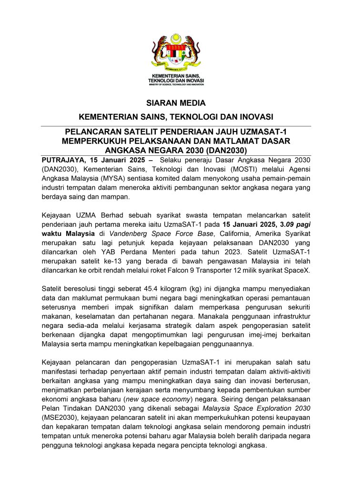
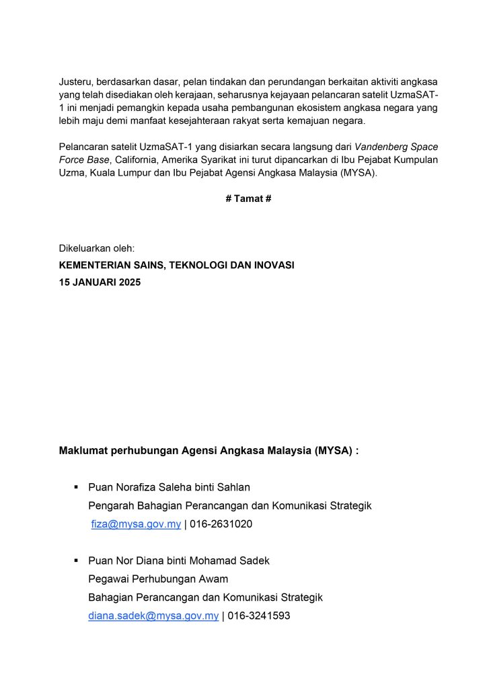
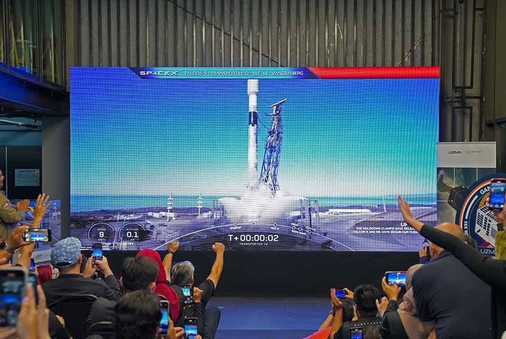

- Press Release, UzmaSAT-1
Pelancaran UZMA SAT-1 bukti kejayaan Dasar Angkasa Negara 2030 – MOSTI
- January 17, 2025
- By Media GeoAI
PUTRAJAYA – Kejayaan Uzma Berhad melancarkan satelit penderiaan jauh pertama miliknya UZMA SAT-1 awal pagi tadi, menjadi bukti pencapaian dalam pelaksanaan Dasar Angkasa Negara 2030 (DAN2030).
Kementerian Sains, Teknologi dan Inovasi (MOSTI) dalam kenyataan hari ini memaklumkan, pelancaran satelit itu mencerminkan komitmen kerajaan melalui Agensi Angkasa Malaysia (MYSA) untuk menyokong pembangunan sektor angkasa negara.
“Kejayaan UZMA SAT-1 ini merupakan satu manifestasi kepada pelaksanaan Pelan Tindakan Malaysia Space Exploration 2030 (MSE2030) yang memacu penglibatan industri tempatan dalam sektor angkasa,” menurut kenyataan itu.


Menurut MOSTI, UZMA SAT-1 yang merupakan satelit beresolusi tinggi dijangka mampu menyumbang kepada peningkatan pemantauan permukaan bumi khususnya dalam aspek keselamatan, pertahanan negara dan pengurusan keterjaminan makanan.
“Penggunaan infrastruktur negara sedia ada melalui kerjasama strategik dalam aspek pengoperasian satelit berkenaan dijangka dapat mengoptimumkan lagi pengurusan imej berkaitan Malaysia serta mampu meningkatkan kepelbagaian penggunaannya,” menurut kenyataan itu.
MOSTI turut menyatakan harapan agar pelancaran satelit itu menjadi pemangkin kepada pemain industri tempatan untuk memperkukuhkan potensi keupayaan dan kepakaran dalam teknologi angkasa bagi meneroka potensi baharu agar Malaysia boleh beralih menjadi negara pencipta teknologi angkasa.
“Berdasarkan dasar, pelan tindakan dan perundangan berkaitan aktiviti angkasa yang telah disediakan oleh kerajaan. Seharusnya kejayaan pelancaran satelit UZMA SAT-1 ini menjadi pemangkin kepada usaha pembangunan ekosistem angkasa negara yang lebih maju demi manfaat kesejahteraan rakyat serta kemajuan negara,” menurut kenyataan itu.
UZMA SAT-1 dilancarkan pada jam 3.09 pagi waktu Malaysia di Vandenberg Space Force Base, California, Amerika Syarikat menggunakan roket Falcon 9 milik SpaceX.
Satelit tersebut yang kini berada di orbit rendah bumi pada ketinggian sekitar 500 kilometer dapat menghasilkan imej beresolusi tinggi dengan kemampuan resolusi ruang 50 hingga 70 sentimeter (cm) yang mampu mengesan objek kecil seperti kenderaan dengan jelas.
Ia dilengkapi kamera berteknologi tinggi dengan sensor multi-spectral band, termasuk sensor RGB (merah, hijau, biru) dan inframerah dekat yang mampu memberikan data terperinci untuk pelbagai kegunaan. – Bernama

Sumber: Sinar Harian Online, 15 Januari 2025 06:43pm
Share the Post:Related Posts
Looking for Answers to Your Industry Issues?
If you want us to share more about space technology, EUDR, EO satellite applications, and industry related, feel free to drop your contact and experience the technology yourself.